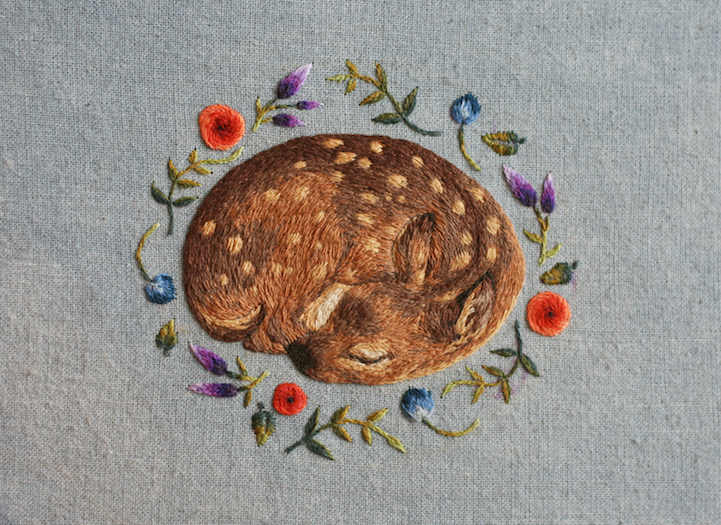

Meticulously-Stitched Embroideries Sculpt Fuzzy Woodland Creatures with Thread
Illustrator Chloe Giordano embroiders miniaturized animals that are so thickly sewn, they take on a sculptural appearance. Her compositions consist of layers of fine, thin threads ...
By Sara Barnes 2/19/2016